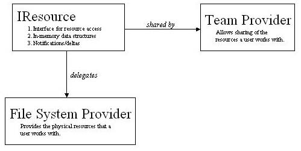

Summary:
This document outlines problems with resource control in 2.1 and outlines the requirements and possible solutions to these problems for the 3.0 release.Last Modified: May 6, 2003
In Eclipse 2.x, several facilities give repository providers a certain level of control over the resources in the workspace. Through these facilities, repository providers are afforded the following:
Although these facilities allow repository providers a high level of control over what happens to resources in the projects shared with their repositories, there are still several problems:
The amount of control that could be given to repository providers over resources in Eclipse can be described using three levels.
Level 1: Control of operations performed on resources. This equates to what is provided in Eclipse 2.x by the team hooks with additional notifications (i.e. copy and add). When a move, copy, delete or modification is performed, the provider can control what happens in the file system or veto the operation.
Level 2: Control of the mapping between resources in the workbench and the underlying file system. This level of control would allow the provider to be able to control what resources in the local file system are mapped to resources in Eclipse. Thus, the provider could hide certain resources (a.k.a. team-private). It could also potentially allow mappings to other locations in the file system much like linked resources.
Level 3: Control of the mapping between resources and any data source. This item would allow providers to map local resources in Eclipse to remote resources (i.e. non-local resources).
Level 1 is close to what Eclipse 2.X provides with the addition of copying being managed in the same way as move/delete. Level 2 gives control of the resource life-cycle to the provider. The provider would have control over all resource methods (add, delete, move, copy, modify and refresh) and could thus ensure that certain file system resources be excluded from Eclipse entirely. The final level, level 3, also gives the provider control over where the contents of the resource are located. This is actually a big step from the second level since this would require an API change, at least in perception, in IResource since fetching the content of resources could be long running.
Also, it is not necessary to say that only repository providers can control resources. What is necessary is to ensure that there is only one controlling entity. This could be a repository provider such as CVS or some other provider, such as PDE for binary projects.
Currently, the resource hooks are mapped to a repository provider through the Team plugin. Since repository providers are project based, so are these hooks. There are several reasons why repository providers are mapped at the project level.
From a repository provider standpoint, there have been few disadvantages of this organization that have been made known. One known problem involves linked resources (see bug 36685) and others have appeared over time but have not been recorded.
Currently, the resource model is built directly on top of the local file system as provided by java.io.File (and some direct calls through a DLL). However, a more flexible approach is to separate the IResource facilities from the file system using an abstraction barrier, as illustrated in Figure 1.

Figure 1: File System Provider in context
In Figure 1, IResource still provides in-memory data structures and notifications but delegates file system activity to a FileSystemProvider. The structure presented in Figure 1 could potentially allow any of the levels of control described earlier. However, the initial intent will be to strive for level 2. In 2.1 the Team Provider and the resource hooks where coupled whereas in the above proposal they are independant. The role of the File System Provider is to provide the physical resources the user works with and the role of the Team provider is to share those resources with others. This separation allows non Team Providers to control resources (zip/jar provider or a PDE binary project).
Restatement of requirements from current implementation and known problems.